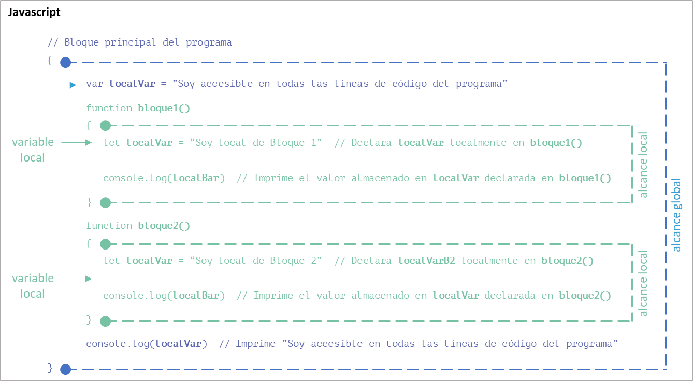

Alcance de una variable
Un concepto muy importante en programación es lo que llamamos alcance de una variable (variable scope).
Definición
El alcance de una variable se refiere a la parte del código donde una variable existe y es accesible para poder ser utilizada por el programa.
Hay dos tipos principales de alcance: local, limitado a la parte del código donde esa variable existe y puede ser accedida; o global, accesible desde cualquier parte del código.
¿Qué es el ámbito de aplicación?
En el contexto de la programación, los términos "ámbito" y "alcance" se utilizan a menudo de manera intercambiable para referirse a la región o parte de código donde una variable es visible y accesible.
Por ejemplo, si decimos que una variable tiene "alcance local", significa que la variable es accesible solo dentro de la región o parte de código donde se declara. De manera similar, si decimos que una variable está en el "ámbito local", estamos diciendo lo mismo.
Entonces, el ámbito de aplicación de una variable es el alcance que tiene la variable, que no es ni más ni menos que la región o parte de código donde la variable existe y es accesible.
Por lo tanto, puedes usar cualquiera de los dos términos para describir dónde una variable puede ser utilizada en tu código.
¿Ámbito global o ámbito local?
Hemos dicho que básicamente podemos dividir a las variables, en función del ámbito de aplicación donde existen y son accesibles, como locales o globales.
Y que la principal diferencia entre una variable global y otra local radica en su alcance o ámbito de aplicación, es decir, en la región o parte de código donde son visibles y accesibles.
Evaluemos un ejemplo de utilización de variables globales y locales en Python:
El código anterior demuestra la diferencia entre las variables globales y las variables locales:
a = 10: Aquí,aes una variable global. Se declara fuera de cualquier función, por lo que es accesible desde cualquier lugar del código.
def mi_funcion(): Esta es la definición de una función llamadami_funcion.
b = 20: Dentro demi_funcion, se declarabcomo una variable local. Solo es accesible dentro demi_funcion.
print(a): Dentro demi_funcion, se puede acceder a la variable globala. Por lo tanto, esta línea imprimirá el valor dea, que es10.
print(b): También se puede acceder a la variable localbdentro demi_funcion. Esta línea imprimirá el valor deb, que es20.
mi_funcion(): Esta línea llama ami_funcion, lo que provocará que se impriman los valores deayb.
print(a): Después de llamar ami_funcion, esta línea imprime el valor de la variable globalanuevamente. Esto es válido y imprimirá10.
print(b): Intenta imprimir el valor deb. Sin embargo, dado quebes una variable local ami_funcion, no es accesible fuera de esa función. Por lo tanto, esta línea dará un error, indicando quebno está definida.
Estudiaremos estos conceptos con mayor profundidad, a continuación.
Variable de alcance global
El ámbito donde se encuentra el código principal de un programa, generalmente definido como main() en algunos lenguajes, se llama ámbito global.
¡Para recordar!
En la mayoría de los lenguajes de programación, incluyendo Python, cualquier código que no está dentro de una función o clase se ejecuta en el ámbito global.
Por lo tanto, una variable global es aquella que se define en el código principal de un programa fuera de cualquier otro ámbito, como ser funciones o bloques de código, por ejemplo.
Las variables globales existen, son visibles, son accesibles y pueden ser modificadas desde cualquier parte del código. Por este motivo, su uso debe ser limitado ya que puede llevar a comportamientos inesperados debido a modificaciones no controladas.
Aquí tenemos varios ejemplos en diferentes lenguajes:
variable_global = "Soy una variable global"
def mi_funcion():
print(variable_global) # Esto es válido! Output : Soy una variable global
mi_funcion()
var variableGlobal = "Soy una variable global";
function miFuncion() {
console.log(variableGlobal); // Esto es válido! Output : Soy una variable global
}
miFuncion();
public class Main {
static String variableGlobal = "Soy una variable global";
public static void main(String[] args) {
System.out.println(variableGlobal); // Esto es válido! Output : Soy una variable global
}
}
#include <iostream>
std::string variableGlobal = "Soy una variable global";
int main() {
std::cout << variableGlobal; // Esto es válido! Output : Soy una variable global
return 0;
}
De todos estos códigos, solo nos detendremos en el detalle de que la variable global se declara en el ámbito global, fuera de cualquier función, y luego es accedida desde algún ámbito, en cualquier parte del código.
¡Atención!
Es importante tener cuidado al usar variables globales, ya que pueden ser modificadas desde cualquier parte del código, lo que puede llevar a comportamientos inesperados.
Buenas prácticas para el uso de variables globales
Las mejores prácticas para el uso de variables globales en programación son las siguientes:
-
Minimizar su uso: En general, es mejor evitar el uso de variables globales siempre que sea posible. Las variables globales pueden hacer que el código sea difícil de entender y mantener, ya que pueden ser modificadas desde cualquier parte del programa.
-
Usar constantes globales: Si necesitas una variable que sea accesible desde todas partes del código, a menudo es mejor hacerla una constante (es decir, un valor que no cambia una vez que se establece). Esto puede evitar muchos problemas asociados con las variables globales.
-
Encapsulamiento en objetos o módulos: Si necesitas compartir un estado entre varias funciones, a menudo es mejor encapsular ese estado en un objeto o módulo. Esto puede hacer que el código sea más fácil de entender y mantener.
-
Documentar su uso: Si debes usar una variable global, asegúrate de documentar claramente dónde y cómo se utiliza. Esto puede ayudar a prevenir errores y hacer que el código sea más fácil de entender.
-
Evitar el uso en funciones multi hilo (multi thread): Las variables globales pueden causar problemas en programas multi hilo, ya que diferentes hilos pueden intentar acceder o modificar la variable al mismo tiempo. Si estás trabajando con hilos, es mejor evitar las variables globales.
Iremos viendo cada concepto más adelante. Por ahora no te preocupes por entender al máximo de que trata cada uno.
Recuerda, cada lenguaje de programación tiene sus propias convenciones y características, por lo que estas prácticas pueden variar dependiendo del lenguaje que estés utilizando.
Variable de alcance local
En términos generales, en la mayoría de los lenguajes de programación, una variable local es una variable que se declara dentro un ámbito local como una función o un bloque de código.
Esta variable solo puede ser accesible y modificada dentro de dicho ámbito, es decir, su ámbito se limita al bloque de código donde se declara. Esto proporciona un control más estricto sobre su utilización.
A su vez, los ámbitos que se encuentren contenidos dentro del ámbito de declaración también tendrán visibilidad y acceso a la variable en cuestión.
¿Qué ocurre si se intenta acceder a una variable local fuera de su alcance?
Cuando intentas acceder a una variable local fuera de su alcance, en la mayoría de los lenguajes obtendrás un error (JavaScript, por ejemplo, posee un mecanismo que evita el error, pero es considerado mala práctica).
Debido a que una variable local tiene un alcance limitado a la región o parte de código donde es declarada, cuando el flujo de ejecución del programa sale de dicha región la variable deja de existir y ya no es visible ni accesible.
Por lo tanto, las variables locales son aquellas que se definen dentro de una región o parte de código, como una función o un bloque de código. Solo existen dentro de ese ámbito y no son reconocibles fuera de él.
Por ejemplo, en Python, el siguiente código devolverá un mensaje de error:
Traceback (most recent call last):
File "…", line 4, in <module>
print(variable_local)
^^^^^^^^^^^^^^
NameError: name 'variable_local' is not defined
Este código devuelve
NameErrorque dice quevariable_localno está definida. Esto se debe a que estás intentando acceder avariable_localfuera de su alcance, que es dentro de la funciónmi_funcion.
Para resolver este problema, es necesario que la función retorne el dato almacenado en la variable variable_local dentro de la función para ser utilizado en el ámbito donde se originó la llamada a la función:
Este código llama dos veces a la función y en ambos casos la función retorna el mismo dato desde la línea 4:
La primera llamada ocurre en la línea 6. El dato retornado desde la función se almacena en una variable que luego es impresa en la línea 7.
La segunda llamada ocurre en la línea 9. El dato retornado desde la función se imprime directamente.
Empleando este procedimiento es como podemos acceder y utilizar el dato almacenado en
variable_localdentro de la función, fuera de ella, sin que el programa devuelva un mensaje de error y se detenga de manera inesperada.
¡Para recordar!
Si declaras una variable dentro de una función, esa variable es local a esa función. No podrás acceder a esa variable fuera de la función o desde otras funciones.
Esto ayuda a evitar conflictos de nombres de variables y a mantener el código más organizado y legible y más fácil de mantener.
¿Cuáles son los ámbitos locales más comunes?
Los ámbitos de aplicación de una variable local pueden ser los siguientes:
-
Ámbito de función: Una variable local declarada dentro de una función solo puede ser accedida dentro de esa función. No es visible fuera de la función.
Pythondef func(): j = 20 # Esta es una variable local print(j) # Podemos acceder a la variable local 'j' func() # Output : 20 print(j) # Esto dará un error porque 'j' no está definida en el ámbito globalEn el código,
jes una variable local a la funciónfunc(). No puede ser accedida fuera defunc(), por lo que el intento de imprimirjfuera de la función resulta en un error. -
Ámbito de bloque: En algunos lenguajes de programación, una variable local puede tener un ámbito limitado a un bloque específico de código, como un bucle o una estructura condicional.
Aquí tienes ejemplos de cómo se maneja el ámbito de bloque en diferentes lenguajes de programación:
JavaScriptfor (let i = 0; i < 5; i++) { let x = i; // En JavaScript, la palabra clave 'let' declara la variable como local. Así, 'x' NO es accesible fuera del bucle } console.log(x); // Esto dará un error en JavaScriptJavafor (int i = 0; i < 5; i++) { int x = i; // En Java, 'x' NO es accesible fuera del bucle } System.out.println(x); // Esto dará un error en JavaC++for (int i = 0; i < 5; i++) { int x = i; // En C++, 'x' NO es accesible fuera del bucle } std::cout << x; // Esto dará un error en C++En los tres códigos, donde se utilizan variables locales de bloque, estas variables solo son accesibles dentro de ese bloque.
¿Qué ocurre con las variables locales de bloque en Python?
En Python, sin embargo, las variables declaradas dentro de un bloque de código como un bucle
foro una declaraciónifno son locales a ese bloque solamente. En cambio, son visibles en el alcance en el que se encuentra ese bloque.Aquí tienes un ejemplo:
Pythonfor i in range(5): x = i # En Python, 'x' es accesible fuera del bucle if (x > 0): print("x es mayor que 0 y vale", x) # Esto es válido! Output : x es mayor que 0 y vale 4 variable_en_bloque = "Soy una variable en un bloque" print(variable_en_bloque) # Esto es válido! Output : Soy una variable en un bloqueEste es un ejemplo de cómo Python maneja el ámbito de las variables. Aquí está lo que sucede paso a paso:
El bucle
forse ejecuta 5 veces, conitomando los valores de0a4. En cada iteración,ise asigna ax. Por lo tanto, al final del bucle,xes igual a4.Después del bucle, hay una estructura alternativa
ifque comprueba sixes mayor que0. Dado quexes4, la condición es verdadera, por lo que se ejecuta el bloque de código dentro delif.Dentro de dicho bloque, se imprime un mensaje que dice "x es mayor que 0 y vale 4". Luego, se declara una variable llamada
variable_en_bloquey se le asigna la cadena "Soy una variable en un bloque".Después de estructura alternativa
if, se imprimevariable_en_bloque. Aunquevariable_en_bloquese declaró dentro de la estructura alternativaif, todavía es accesible fuera de ella.Esto se debe a que Python no tiene un ámbito de bloque como algunos otros lenguajes de programación; en su lugar, tiene un ámbito de función.
Por lo tanto, la salida de este código será:
Como podemos evaluar, las variables locales de bloque en Python se comportan de manera diferente a muchos otros lenguajes de programación, donde las variables declaradas dentro de un bloque de código son locales a ese bloque solamente.
¡Para recordar!
En Python, las variables son locales a las funciones, no a los bloques de código.
-
Ámbito de clase (en lenguajes orientados a objetos): En lenguajes de programación orientados a objetos como Python, Java, C++, etc., una variable local puede ser declarada dentro de un método de una clase. Esta variable solo será accesible dentro de ese método.
Puedes analizar un ejemplo aquí:
Pythonclass Mi_Clase: def mi_metodo(self): x = 10 # Variable local print(x) # Esto es válido def otro_metodo(self): print(x) # Esto dará un error, 'x' no es accesible fuera de 'mi_metodo' obj = Mi_Clase() obj.mi_metodo() obj.otro_metodo()Este código define una clase llamada
Mi_Claseque tiene dos métodos:mi_metodoyotro_metodo.En el método
mi_metodo, se declara una variable localxy se le asigna el valor10. Luego, este valor se imprime.En el método
otro_metodo, se intenta imprimir la variablex. Sin embargo, dado quexes una variable local dentro del métodomi_metodo, no es accesible desdeotro_metodo. Por lo tanto, este intento de imprimirxresultará en un error.Finalmente, se crea un objeto
objde la claseMi_Clasey se llaman ambos métodos. La llamada aobj.mi_metodo()imprimirá10, mientras que la llamada aobj.otro_metodo()dará un error porquexno está definida en ese contexto. -
Ámbito de objeto: En la programación orientada a objetos, las variables definidas dentro de un objeto (a menudo llamadas propiedades o atributos del objeto) tienen un ámbito local al objeto.
Puedes analizar un ejemplo aquí:
Pythonclass MiClase: def __init__(self, valor): self.mi_variable = valor def muestra_variable(self): print(self.mi_variable) # Crear un objeto de MiClase objeto = MiClase("Hola, mundo!") # Acceder a mi_variable a través del objeto print(objeto.mi_variable) # Esto imprimirá: Hola, mundo! # Usar un método del objeto para acceder a mi_variable objeto.muestra_variable() # Esto también imprimirá: Hola, mundo!En este código,
mi_variabletiene un ámbito de objeto. Solo es accesible a través de una instancia deMiClase(en este caso,objeto). Dentro de la clase, puedes acceder ami_variableusandoself.mi_variable. Fuera de la clase, puedes acceder ami_variableusandoobjeto.mi_variable.
Existen otros ámbitos más específicos que por su utilización, solo vamos a referenciarlos:
-
Ámbito de módulo o archivo: En algunos lenguajes de programación como Python o JavaScript (Node.js), las variables definidas en un archivo o módulo son locales a ese archivo. No son accesibles desde otros archivos a menos que se exporten o se importen explícitamente.
Puedes analizar un ejemplo aquí:
En Python, las variables definidas en un archivo son locales a ese archivo. Aquí tienes un ejemplo:
Supongamos que tienes dos archivos Python:
archivo1.pyyarchivo2.py.En
archivo1.py, defines una variable:Si intentas acceder a
mi_variabledesdearchivo2.pysin importarla explícitamente, obtendrás un error:Python# archivo2.py print(mi_variable) # Esto dará un error, mi_variable no está definida en este archivoPara acceder a
mi_variabledesdearchivo2.py, necesitas importarla:Python# archivo2.py from archivo1 import mi_variable print(mi_variable) # Esto imprimirá: Hola, mundo!En este código,
mi_variabletiene un ámbito de módulo o archivo. Solo es accesible dentro dearchivo1.pya menos que se importe explícitamente en otro archivo. -
Ámbito de espacio de nombres (namespace): En lenguajes como C++ o Python, puedes definir espacios de nombres que proporcionan ámbitos para las variables. Las variables definidas dentro de un espacio de nombres son locales a ese espacio de nombres.
Puedes analizar un ejemplo aquí:
En Python, un espacio de nombres (namespace) es una forma de encapsular variables, funciones y clases. Un ejemplo común de un espacio de nombres es un módulo.
Supongamos que tienes dos archivos Python:
modulo1.pyymodulo2.py.En
modulo1.py, defines una variable y una función:En
modulo2.py, puedes acceder ami_variableymi_funcion()importándolas desdemodulo1:Python# modulo2.py import modulo1 print(modulo1.mi_variable) # Esto imprimirá: Hola, mundo! print(modulo1.mi_funcion()) # Esto imprimirá: ¡Hola desde modulo1!En este código,
modulo1es un espacio de nombres.mi_variableymi_funcion()están en el espacio de nombres demodulo1, y puedes acceder a ellas usando la sintaxismodulo1.mi_variableymodulo1.mi_funcion(). Esto ayuda a evitar conflictos entre nombres de variables y funciones en diferentes módulos. -
Ámbito de cierre (closure): En algunos lenguajes de programación que admiten funciones de primera clase o funciones anidadas, una variable definida en una función externa puede ser accesible en una función interna. Este es un concepto avanzado conocido como cierre o closure.
Puedes analizar un ejemplo aquí:
Un cierre en Python es una función que recuerda los valores de las variables del ámbito en el que fue creada, incluso si ese ámbito ya no existe.
Pythondef funcion_externa(x): def funcion_interna(y): return x + y return funcion_interna mi_closure = funcion_externa(10) # Aunque la función externa ya ha terminado de ejecutarse, # mi_closure recuerda el valor de x print(mi_closure(5)) # Esto imprimirá: 15En este código,
funcion_internaes un cierre que recuerda el valor dexdel ámbito defuncion_externa. Cuando llamamos ami_closure(5),funcion_internatodavía puede acceder al valor dex, incluso aunquefuncion_externaya ha terminado de ejecutarse. Esto es posible gracias al ámbito de cierre.
¡Para recordar!
El ámbito de una variable determina dónde puede ser accesible en el código.
Una variable global es accesible y modificable desde todo el código del programa.
Una variable local es accesible y modificable solo dentro del ámbito donde es accesible y modificable, ya sea una función, un bloque de código específico o un método de una clase; y no desde todo el código del programa.
Es importante entender estos ámbitos para evitar errores y escribir código más limpio y mantenible.
Ventajas de utilizar variables locales
Las variables locales tienen varias ventajas sobre las variables globales:
-
Evitan colisiones de nombres: Las variables locales existen solo dentro de la función donde se definen, lo que significa que puedes usar el mismo nombre de variable en diferentes funciones sin que se produzcan conflictos.
-
Facilitan la lectura y el mantenimiento del código: Al limitar el alcance de una variable a una sola función, se hace más fácil entender qué hace esa variable y cómo se utiliza.
-
Promueven la modularidad y la reutilización del código: Las funciones que utilizan solo variables locales (y parámetros) son independientes del estado global del programa, lo que significa que pueden ser fácilmente reutilizadas en diferentes contextos.
-
Evitan efectos secundarios inesperados: Cuando usas variables globales, cualquier función podría cambiar su valor, lo que puede llevar a comportamientos inesperados. Con las variables locales, tienes un control total sobre cuándo y cómo cambia su valor.
Buena práctica
Es una buena práctica de programación limitar el uso de variables globales y utilizar variables locales siempre que sea posible para evitar colisiones de nombres, facilitar la lectura y el mantenimiento del código, promover la modularidad y la reutilización del código y evitar efectos secundarios inesperados.
¿Cómo identificar el ámbito de aplicación de una variable?
Para identificar el ámbito de aplicación de una variable, es preciso detectar las "marcas" de apertura y de cierre de la región o parte de código que contiene la declaración de dicha variable.
¡Para recordar!
La mayoría de los lenguajes de programación, como JavaScript, utilizan llaves ( { } ) para marcar el principio y el final de un bloque de código.
Otros lenguajes, como Python, emplean la indentación, un aspecto del estilo de codificación que implica agregar espacios en blanco al comienzo de las líneas de código para indicar bloques de código y mejorar la legibilidad.
Una variable global es visible y accesible en todas las regiones o partes de código.
Una variable local solo puede ser accesible y modificada dentro del ámbito de la región o parte de código donde sea declarada.

Aquí vemos que la variable soyGlobal ha sido declarada entre las dos llaves marcadas con un círculo azul. El alcance de esa variable es todo lo que se encuentra entre esas dos llaves. El mismo concepto se aplica para las variables localVarB1 y localVarB2, cuyos alcances están limitados por las llaves de cada función marcadas con un círculo verde.
Para pensar:
¿Qué ocurre, entonces, con las variables localVarB1 y localVarB2 cuando son accedidas dentro de las funciones bloque1() y bloque2()?
En caso de que se utilice el mismo nombre de variable declarado en varios niveles de anidamiento (significa que hay al menos un bloque dentro de otro bloque), prevalecerá la declaración del bloque más interno, evitando el acceso, durante la ejecución del bloque interno, a la variable declarada en el bloque externo.

Para pensar:
¿Qué ocurre ahora, en cada caso, con la variable declarada dentro de cada bloque con el mismo nombre localVar cuando se accede a su valor?
Importante
Dada su escasa legibilidad, las declaraciones anidadas de un mismo nombre de variable son situaciones que nunca deberían ocurrir en un programa bien diseñado.
Primer caso práctico de estudio
| JavaScript | |
|---|---|
¿Para pensar?
¿Puedes analizar y entender como funciona este programa?
Guíate por los colores. Si no, continúa leyendo y ¡lograrás entenderlo!
// Esto se ejecuta en el ámbito de inner():
La variable local x dentro de inner() vale 2
La variable local y declarada en outer() vale 1
// Esto se ejecuta en el ámbito de outer():
La variable local x dentro de outer() vale 1
La variable global g dentro de outer() vale 0
// Esto se ejecuta en el ámbito principal del programa:
La variable global x vale 0
Segundo caso práctico de estudio
| JavaScript | |
|---|---|
¿Para pensar?
En este programa existe una ligera diferencia en la declaración de una de las variables ¿Puedes analizar y entender cuál es el error conceptual que hace que el programa devuelva un error?
Guíate por los colores. Si no, continúa leyendo y ¡lograrás entenderlo!
Puedes ver el resultado haciendo clic aquí.
| JavaScript | |
|---|---|
Uso de variables globales en funciones (ámbitos locales)
El uso de variables globales en ámbitos locales varía entre los diferentes lenguajes de programación, pero la idea general es la misma: una variable global es accesible desde cualquier parte del código, incluyendo funciones o métodos (ámbitos locales).
Aquí vemos cómo se maneja en algunos lenguajes:
# Variable global
global_var = 10
def funcion_local():
global global_var # Visibilidad de la variable global
local_var = 10 # Variable local
print("Var local:", local_var) # Acceso a la variable local
print("Var global desde otro ámbito:", global_var) # Acceso a la variable global
global_var = global_var + local_var # Modificación de la variable global
funcion_local()
print("Var global desde su ámbito:", global_var) # Acceso a la variable global desde su ámbito
Var local: 10
Var global desde otro ámbito: 10
Var global desde su ámbito: 20
global_vares una variable global. Dentro de la funciónfuncion_local, usamos la palabra claveglobalpara indicar que queremos usar la variable globalglobal_var, y no una nueva variable local con el mismo nombre. Esto permite que la función tenga acceso tanto a las variables locales definidas dentro de ella como a las variables globales definidas fuera de ella.
// Variable global por estar declarada en el ámbito principal
let globalVar = 10;
function funcion_local() {
let localVar = 10 // Variable local
console.log("Var local:", localVar) // Acceso a la variable local
console.log("Var global desde otro ámbito:", globalVar) // Acceso a la variable global
globalVar = globalVar + localVar; // Modifica la variable global
}
funcion_local();
console.log("Var global desde su ámbito:", globalVar) // Acceso a la variable global desde su ámbito
Var local: 10
Var global desde otro ámbito: 10
Var global desde su ámbito: 20
En JavaScript, aunque la inicialización
let globalVar = 10;indique que la variable es local, al declararla en el ámbito principal, la variable será global.
Así se accede directamente a la variableglobalVardentro defunción_localpara poder utilizarla.
Esto permite que la función tenga acceso tanto a las variables locales definidas dentro de ella como a las variables globales definidas fuera de ella.
#include <iostream>
// Variable global
int globalVar = 10;
void funcion_local() {
int localVar = 10; // Variable local
std::cout << "Var local: " << localVar << std::endl; // Acceso a la variable local
std::cout << "Var global desde otro ámbito: " << globalVar << std::endl; // Acceso a la variable global
globalVar = globalVar + localVar; // Modifica la variable global
}
int main() {
funcion_local();
std::cout << "Var global desde su ámbito: " << globalVar << std::endl; // Acceso a la variable global desde su ámbito
return 0;
}
Var local: 10
Var global desde otro ámbito: 10
Var global desde su ámbito: 20
En C++ se accede directamente a la variable
globalVardentro defunción_localpara poder utilizarla.
Esto permite que la función tenga acceso tanto a las variables locales definidas dentro de ella como a las variables globales definidas fuera de ella.
En todos estos códigos, se declara una variable global y luego se accede y se modifica desde una función (en ámbito distinto al que fuera declarada la variable).
Por último, se accede a la variable modificada desde su ámbito, demostrando el peligro que conlleva utilizar variables globales por los motivos que ya hemos visto y que volvemos a enunciar a continuación:
Mala práctica
El uso excesivo de variables globales puede llevar a un código confuso y propenso a errores, por lo que generalmente se recomienda minimizar su uso.
Buena práctica
Cuando se trata de usar variables globales en funciones, es mejor pasar las variables como argumentos a las funciones y retornar los resultados.
Este concepto lo estudiaremos en profundidad más adelante. Por el momento, te dejo la buena práctica.
¿Puede una variable local, dentro de su ámbito, reemplazar a una variable global?
Sí, si una variable local tiene el mismo nombre que una variable global, la variable local "reemplaza" u "oculta" a la variable global dentro de su ámbito de declaración o de los ámbitos contenidos dentro de su ámbito de declaración. Esto se conoce como "sombreado" o "shadowing".
Sin embargo, este reemplazo es solo temporal y solo aplica dentro del ámbito local donde se declaró la variable local con el mismo nombre que la variable global.
Por ejemplo, en Python:
x = 10 # Esta es una variable global
def mi_funcion():
x = 5 # Esta es una variable local
print(x) # Imprime 5
mi_funcion()
print(x) # Imprime 10
En este código, dentro de
mi_funcion, la variable localxreemplaza a la variable globalx. Pero fuera demi_funcion, la variable globalxretiene su valor original.
Mala práctica
Es importante tener en cuenta que el uso de variables locales con el mismo nombre que las variables globales puede ser confuso y generalmente se considera una mala práctica de programación.
Es mejor usar nombres de variables únicos para evitar confusiones.
¿Puede una variable local, fuera de su ámbito, reemplazar a una variable global?
No, una variable local no puede reemplazar a una variable global fuera de su ámbito de declaración. El ámbito de una variable local está limitado la región o parte de código, como una función o un bloque, en el que se declara. Fuera de ese ámbito, la variable local no es reconocida por el programa.
Por ejemplo, en Python:
x = 10 # Esta es una variable global
def mi_funcion():
x = 5 # Esta es una variable local
print(x) # Imprime 5
mi_funcion()
print(x) # Imprime 10
En este ejemplo, la variable local x solo existe dentro de mi_funcion. Fuera de mi_funcion, la variable local x no existe y no puede reemplazar a la variable global x.
¡Para recordar!
Si intentas acceder a una variable local fuera de su ámbito, obtendrás un error porque la variable no está definida en ese ámbito.
Veamos si entendimos los conceptos.
¿Qué ocurrirá cuando se ejecute la última línea del siguiente programa?
global_var = 10
def modificar_var_global():
global global_var
global_var += 5
def usar_var_global_localmente():
local_var = global_var * 2
print("Var local:", local_var)
print("Var global:", global_var)
modificar_var_global()
usar_var_global_localmente()
print("Var global:", global_var)
print("Var local:", local_var)
Ver resultado (1)